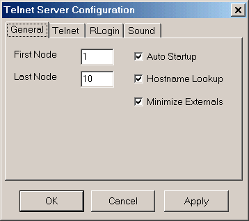
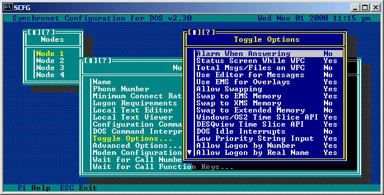
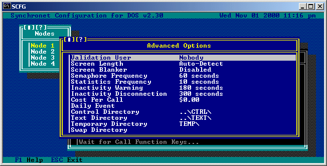

Run SCFG. Select Nodes from the main menu. Hit INS (insert key) to create additional nodes. Each added node will have the configuration options copied from the last node. No configuration changes should be necessary.
SBBSCTRL-Windows: If you'd like all nodes to be available for telnet logins, set the Last Node in the telnet configuration dialog to your highest configured node number.

All nodes controlled by the same instance of SBBSCTRL will use the configuration information for the node specified as the First Node in the telnet configuration dialog.
Alternatively, you can edit the LastNode value in the [BBS] section of your Synchronet initialization file (e.g. ctrl/sbbs.ini).
To configure a node, select "Nodes" from the SCFG "Configure" menu. You will then see a list of all the nodes installed on your system. You will also see the bottom line of the screen now has two additional key commands added, INS (Insert) and DEL (Delete). INS and DEL are used to add and delete nodes from the system. If you select one of the nodes listed, you will receive another menu as follows:
Logon Requirements:
Use this option to set specific requirements to logon this node.
 Allow Logon by Number: Setting this option to 'Yes' will allow users to logon by typing their user number at the login logon prompt. Allow Logon by Real Name: When set to 'Yes' this option allows users to enter their real name (or company name) at the login prompt to logon to the BBS. Always Prompt for Password: When set to 'Yes' this option will cause the user to ALWAYS be prompted for a password at logon, even if they have entered an incorrect (non- existent) user name at the login prompt. Allow 8-bit Remote Logons: To allow E-7-1 terminals to use this node, set this option to 'No'. This will also eliminate the ability of 8-bit remote users to send IBM extended ASCII characters during the logon sequence.
Spinning Pause Prompt: To disable the spinning cursor on screen-pause prompts, set this option to 'No'.
Keep Node File Open: It can benefit performance to leave the node file (ctrl/node.dab) open. If you have problems with the node file being read correctly across network drives (on a LAN), try setting this option to 'No'.
When selecting this option, you will be brought to a sub-menu of options as follows:

Validation User:
This is the number of the user to whom validation feedback is sent.
This value will usually be set to 1 (the sysop). If this value is set
to 0, then new users will not be required to enter validation feedback.
Semaphore Frequency:
This option specifies how often (in seconds) this node should perform
semaphore checks (e.g. checks to see if an event should be run, the
node should be downed, etc.).
Statistics Frequency:
This options specifies how often (in seconds) this node should check
system statistics (calls per day, logons today, etc.).
Inactivity Warning:
This is the number of seconds of user inactivity before a warning
(typically: "Username, are you still there?") is displayed to the
user.
Inactivity Disconnection:
This is the number of seconds of user inactivity before the user
is automatically disconnected.
Daily Event:
This is the command line to execute when the first caller after
midnight logs off. If the program is located in the EXEC directory,
this command line should start with the %! specifier.
Text Directory:
This is the path to the text directory. This is where all menus,
macros, SIF files, QWK files, system information, and other text
files are stored.
Copyright © 2006 by Rob Swindell
Synchronet BBS Software (Synchronet)
Version 3 is comprised of several documentation,
library, executable, and source code
files, all of which are covered by the
GNU General Public License with the exception of the following portions
covered by
the GNU Lesser General Public License:
SMBLIB and XSDK.
Synchronet Version 2 (for DOS and OS/2) and its source code was released to the
Public Domain by Digital Dynamics
in 1997 and remains Public Domain software today.
Synchronet Version 3 is not Public Domain software.
For the complete Copyright Information please read the Copyright Document .